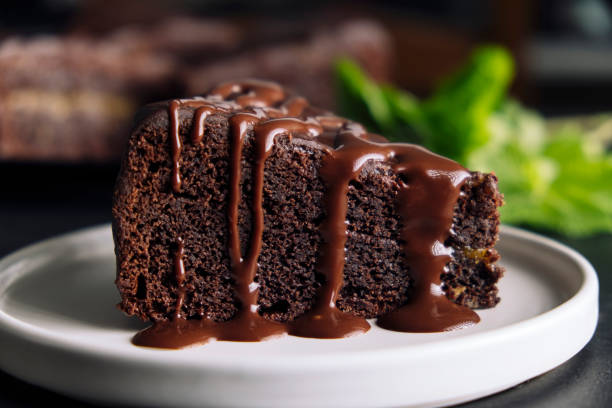

Chocolate Cake

Description
Indulge in a delicious vegan chocolate cake, perfect for any occasion! This recipe uses simple plant-based ingredients like flour, cocoa powder, sugar, and almond milk, ensuring a rich and moist texture. With a few easy steps, you'll create a scrumptious dessert that's both compassionate and decadent. Enjoy!
Ingredients
- 1 cup all-purpose flour
- 1 cup unsweetened cocoa powder
- 1 teaspoon baking powder
- 1 teaspoon baking soda
- 1/2 teaspoon salt
- 2 cups almond milk
- 1 1/2 cups granulated sugar
- 3/4 cup vegetable oil
- 2 teaspoons vanilla extract
- 1 cup boiling water
Steps
- Preheat oven to 350°F (175°C). Grease and flour two 9-inch round cake pans.
- In a large bowl, combine flour, cocoa, baking powder, baking soda, and salt.
- Add almond milk, sugar, oil, and vanilla; beat on medium speed for 2 minutes.
- Gradually add boiling water, beating until blended.
- Pour batter into prepared pans.
- Bake for 30-35 minutes or until a toothpick inserted in the center comes out clean.
- Cool for 10 minutes before removing from pans to wire racks. Cool completely.
- Frost with your favorite vegan chocolate frosting. Enjoy!